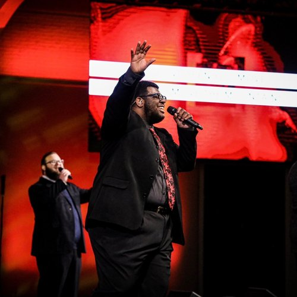

WE BELIEVE IN GOD'S GOSPEL
Our identity as Sonship Ministries
is centered on God’s evangel, the gospel of Jesus Christ, who died and
rose again to
give us eternal life. To God’s glory, the gospel is the power of God for the
salvation of all who believe. Our
fundamental theological convictions are aspects of this gospel.